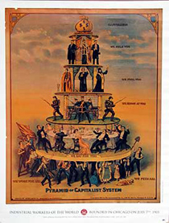

Submitted on Tue, 12/20/2011 - 3:12pm
By Phinneas Gage - originally posted at recompositionblog.wordpress.com
Christine braced herself, took a deep breath and then jumped up on to a mail tub and began to shout “help! help! I am being robbed.” A sea of faces stared at her blankly. She got the attention her fellow Letter Carriers, but everyone was looking at her like she was crazy. That was fine, she was acting crazy. “Canada Post is robbing every single one of us, they are robbing people collecting pensions, they are robbing workers who aren’t even working here yet. We need to stand together, Winnipeg walked out and we need to show them that we have their back and will stand with them”.
Some began to nod knowingly; she then explained that workers earlier in the week had walked out in an unlawful strike in Winnipeg over technological change that was causing twelve hour days and massive job loss. She explained that Winnipeg was a testing ground for the new work methods and that the workers in Winnipeg were not just fighting for themselves they were fighting for everyone at Canada Post Corporation. Christine explained the struggle, the stakes, and that our fellow workers in Winnipeg were counting on a show of solidarity from across the country. She may have been a bit dramatic, but she was also being honest, sometimes you have to shout to be heard.
The meeting Christine called was part of a wave of work floor meetings across the city. The wave started at another workplace, Depot Nine. At some of these meetings stewards read statements published by “The Workers Struggle with the Modern Post” a grassroots Postal Workers blog based out of Winnipeg. Some of the meetings were open assemblies open to all employees, where workers could plan their next steps and air grievances. These meetings were part of a very flexible plan, part strategy and part flying by the seat of our pants. The workers led the struggle and often the official union structures were left behind in the dust as workers on the floor took initiative. This wasn’t centrally planned but it didn’t just happen spontaneously. It wasn’t outside and against the union nor was it a struggle within it against some abstract bureaucracy- we were trying something new on our own terms.
Submitted on Tue, 04/25/2006 - 8:37pm
| ART AND UNREST: OUT OF THE COFFEE SHOPS AND INTO THE STREETS Through Jan, Opening Thu, Jan 5, Remedy Café (8631-109 St), Info: www.edmonton.iww.ca "It’s the first time we’ve ever done anything like this," confesses Desiree Schell of Edmonton’s branch of the Industrial Workers of the World. "It was originally just discussed over beer, as many good ideas are discussed–over beer. We thought an art show would be not only fun to do, but would also be an opportunity to demonstrate to people that the IWW is not only about being a union, but also is a vision for better world, a better community, and that includes exploring other methods of cultural expression. We have no idea where this may lead–we really have a desire to extend ourselves further into the community." |
Submitted on Sat, 01/14/2006 - 5:48am
By Gordon Kent - The Edmonton Journal, Sunday, January 08, 2006
 EDMONTON -- Mike Tulley has spent much of his life making sure the causes he supports get their messages out.
EDMONTON -- Mike Tulley has spent much of his life making sure the causes he supports get their messages out.
The soft-spoken Riverdale resident doesn't make many speeches, but if there's a peace march, an arts fundraiser or a labour rally, Tulley is usually there -- operating the sound equipment.
For the past 35 years the sound engineer has been volunteering behind the scenes with the many causes he supports, hoping his work will help make the world a little better.
Submitted on Sun, 10/09/2005 - 5:16pm
 By Eugene Plawiuk - Industrial Worker, September 2005.
By Eugene Plawiuk - Industrial Worker, September 2005.
It is time for the labour movement in Canada to grow a backbone and "Just Say No!" to working with or obeying Labour Relations Boards and their rulings.
In Alberta, recent rulings against unions include one that it's legal for Finning to outsource its work to the rat union CLAC plant. The fact that Jim Dinning, who hopes to replace Ralph as Premier of Alberta, sits on the Finning board probably influenced this decision against the Machinists whose members are having their jobs contracted out.
A disputes inquiry is being held into the Lakeside Packers strike, effectively ending the strike for 60 days, but with no guarantee of binding arbitration. The union requested binding arbitration and the Minister of Labour never responded. Lakeside Packers is owned by the world's biggest meat merchant, Tyson Foods. Tyson is happy. Their plant is operating. Supervisors are telling employees the union is powerless.
There is no fair or level playing field for workers in Alberta labour relations. The game is rigged in favour of the bosses. While unions have representatives on the Labour Relations Board, so do the bosses. In this case the government picked a management lawyer representing the anti-union Construction Industry Merit Shops as chair.
Submitted on Mon, 08/29/2005 - 3:02pm
On August 15th, Fort McMurray Today ran the following article on the upcoming actions:
Alberta CLAC under fire as new group targets them
By RENATO GANDIA
To raise awareness of what they feel are unacceptable practices by the Christian Labour Association of Canada (CLAC) the Industrial Workers of the World (IWW) will be holding a rally in three Alberta cities, including Fort McMurray.
’The main point of this rally is to raise awareness and solidarity against CLAC,’ said Bryan Roberts an IWW delegate from Edmonton, today. Scheduled on Aug. 26, the rally will be held in front of the CLAC in the Bob Lamb Industry Education Centre office between 7:30 to 9:30 p.m. ’We just want to raise awareness that CLAC as a union does not really represent its rank and file workers,’ Roberts said.
Early in July, an estimated 4,000 union workers staged a rally here against the CLAC and on the issue of bringing temporary foreign workers to Fort McMurray. This time the focus of the rally will be more general and not just about foreign workers, said Roberts.